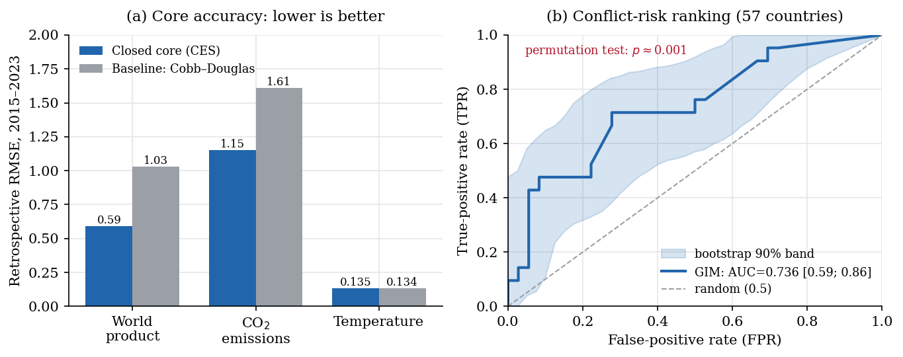
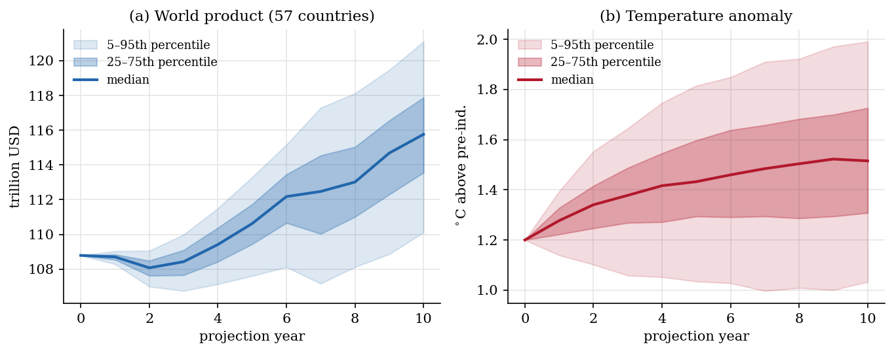
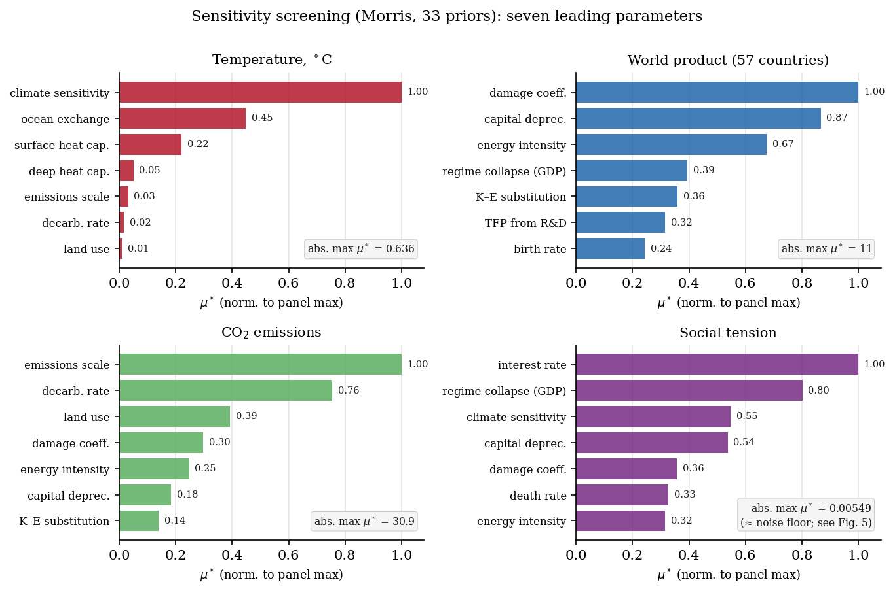

GIM17 — детерминированная имитационная модель мира (~57 стран), объединяющая экономику, климат, ресурсы и общественно-политический контур в едином годовом шаге. Все количественные результаты получены прогоном валидированного движка; язык-ассистент лишь маршрутизирует запрос и описывает итог. Ниже — архитектура, описание модулей, путь обращения к ЛЛМ и результаты валидации.
Замкнутая объективно-калиброванная экономика: выпуск по CES от капитала, труда и энергии; накопление капитала, передача «деньги→цены» (количественный член Филлипса, λ≈0.027), эндогенный рост (TFP из запаса НИОКР) и торговля по гравитационной модели (δ=0.9).
Данные: базовый ВВП, капитал, население, производительность по странам.
Выбросы CO₂ из энергопотребления → концентрация → глобальная температура через энергобалансовую динамику (отклик с инерцией океана). Температурный ансамбль с малой вариативностью для интервалов.
Данные: интенсивность выбросов, чувствительность климата (ECS), обмен с океаном.
Энергия, еда и металлы: производство, потребление, резервы и цены с рыночным клирингом и реакцией спроса на цену (год-к-году, без накопления). Энергокап привязан к физическому горизонту резервов.
Данные: резервы, производство и потребление ресурсов по странам.
Социальная напряжённость, долговые и режимные кризисы, риск конфликта (структурная склонность × напряжённость) и автоматические меры безопасности при ресурсном стрессе; санкции и эскалация как рычаги.
Данные: социальные приоры; конфликтный риск сверен с записью UCDP.
Реальный пространственный граф (по границам стран) задаёт четыре переключаемых канала: торговую гравитацию и пространственное распространение конфликта, напряжённости и климатических эффектов между соседями.
Данные: геометрия границ; якоря из литературы (Disdier–Head, PITF/ViEWS).
Монте-Карло по литературным приорам даёт веера (медиана, IQR, 5–95). Скрининг Морриса ранжирует ведущие параметры; результаты проверены на устойчивость к числу траекторий.
Данные: 33 ключевых приора с распределениями и источниками.
Ассистент — это маршрутизатор инструментов, а не генератор чисел. Языковая модель отображает вопрос на рычаги или типовой сценарий, вызывает движок и описывает результат; любые величины приходят из детерминированного прогона.
«Золотой» ретро-прогон 2015–2023 закреплён и воспроизводится байт-в-байт. Риск конфликта оценён против записи вооружённых конфликтов (UCDP GED, 57 стран): AUC 0.736, прирост по Брайеру +0.143 над базовой частотой, p≈0.001. Социальная цена углерода (SCC) сходится к ~$30 на 100-летнем горизонте (≈ DICE) и ~$37 на 300-летнем.


